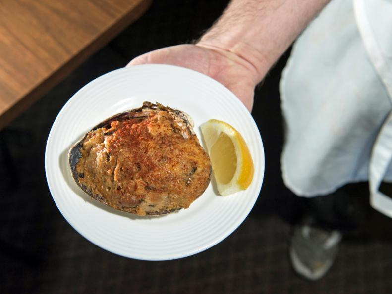
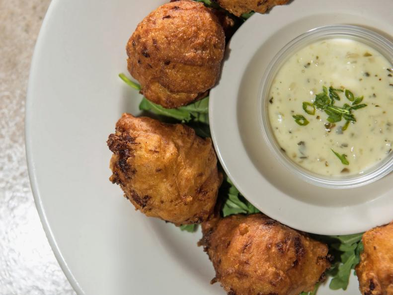
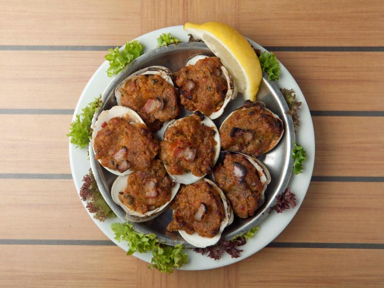
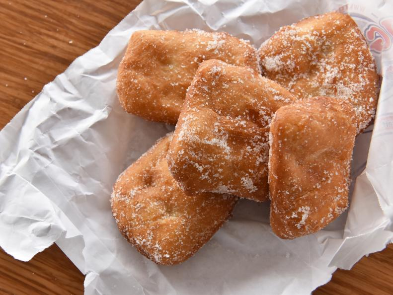

Local Cuisine
Stuffies
This dish is a local favorite which makes use of Quahogs, a staple ingredient for Rhode Island local cuisine. Stuffies are incredibly delicious and sweet with them served straight out from the oven. The dish is made by chopping the Quahogs and mixing them with onions, crushed pepper flakes, Italian bread, and some of their homemade briny juice. If your interested you could try visiting the Amaral's Fish & Chips located in Waren at 4 Redmond Street.
Clam Cakes
The Clam Cakes from Aunt Carrie are extremely popular with them preparing their batter in a giant cement mixer. The cakes are made with common ingredients such as freshly chopped clam, flour, water, and seasoning. What makes these super delicous however is the chowder where you dip your cakes in. The combination of the sweet clam cakes and flavorful chowder will send your taste buds to heaven. If your interested in Aunt Carrie you can find them in Narragansett at 1240 Ocean Road.
Clams Casino
Clam Casinos was a staple dish in Rhode Island's clam shacks and fancy diners. In order to perfect this dish the owner of Matunuck Oyster Bar, Perry Raso, traveled around the state with his chef to perfect this dish. The clams from Matunuck Oyster Bar are all freshly caught each morning making their Clam Casinos to taste very unique. They make it by stuffing the clams with bell peppers, bacon, breadcrumbs and with a bit of sherry. You can find the bar in South Kingston at 629 Succotash Road.
Dough Boys
Similar to doughnuts ,but not quite this dish will blow your taste buds away with how sweet they are. The resturaunt Iggy's Doughboys & Chowder House has been making this dish since 1989 making them masters at their craft. The dish is described to be like sweet bread dought with powdered sugar and cinnamon. Some of the locals love to dip this sweet dough into marianna sauce making it quite the unique dish. If your interested you can find them in Narragansett at 1151 Point Judith Road.